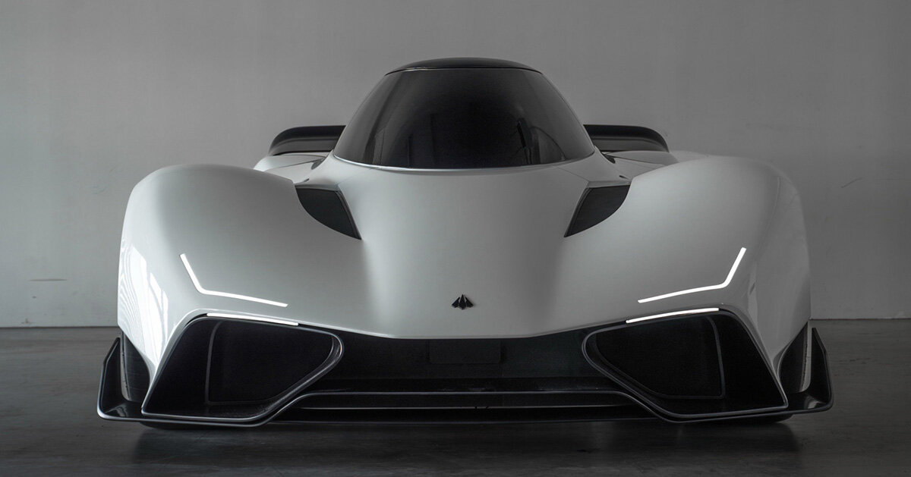

for DC Advanced UX Team.Vivi · Yohan · Libby · Lim Jisu · Katey · Anna
Back Issue

Cockpit
Sanrivatti: lean forward, see the corner
The driver sits forward and upright, head toward the corner, under a single-piece canopy. Sanrivatti calls the posture the Apex Position. At Silverstone’s Corner Three it puts 3.2 times more of the circuit in view than a set of ten hypercars and track cars, with a vertical field of 28 degrees against 15.5 for the benchmark. The wheel, the pedals and the bodywork all shift to suit that lean. The body is low and long, cut around the head, closer to a peregrine in a dive than to a reclined cockpit.
운전자는 앞으로 기울고 더 곧게 앉는다. 머리는 코너를 향하고, 위는 한 장의 캐노피다. 산리바티는 이 자세를 에이펙스 포지션이라 부른다. 실버스톤 3번 코너에서 서킷이 보이는 범위는 비교한 하이퍼카와 트랙 카 열 대의 3.2배이고, 수직 시야는 28도, 기준 차는 15.5도다. 스티어링, 페달, 보디가 그 기울기에 맞춰 움직인다. 차체는 낮고 길며 머리 둘레로 잘려, 누운 콕핏보다 급강하하는 송골매에 가깝다.
Two noses get hands, a face and a song. Marcos Siqueira and Julien Marsouin at Creative Control in Berlin drew the characters by hand, then locked the look in Photoshop and Nano Banana before Seedance 2.5 made them gesture. The film is a mini-musical about smell, and they wanted it to feel like a CGI short, not a pile of generated stills. The same nose has to survive every cut: proportion, texture, light. DaVinci Resolve holds the edit. Suno wrote the track.
코 두 개에 손과 얼굴, 노래가 붙는다. 베를린 크리에이티브 컨트롤의 마르코스 시케이라와 쥘리앵 마르수앵이 캐릭터를 먼저 손으로 그리고, 포토샵과 나노 바나나로 모습을 잠근 뒤 시던스 2.5가 몸짓을 만들게 했다. 영화는 냄새에 관한 미니 뮤지컬이고, 생성 스틸을 쌓은 것이 아니라 CGI 단편처럼 느껴져야 했다. 같은 코가 컷마다 살아야 한다. 비례, 질감, 빛. 편집은 다빈치 리졸브, 곡은 수노다. 코가 서로 반응하는 것이 공연 전부다.
Five typefaces, and the 1968 batter does not move. Nick Sherman redrew Franklin Gothic as MLB Franklin. David Jonathan Ross and Bethany Heck took the 1845 Clarendon into MLB Clarendon. Skye Dillon’s MLB Block is the octagon from old parks and jersey numbers. OH no Type Co. cut MLB Script from the scripts stitched on uniforms. Tipotype’s MLB Flare comes from hand-lettering. The batter logo, red and blue around a white silhouette, stays as Jerry Dior drew it.
五套字体，1968年的击球手不动。Nick Sherman重画Franklin Gothic为MLB Franklin。David Jonathan Ross与Bethany Heck把1845年的Clarendon收成MLB Clarendon。Block是八边形，Script来自队服手写，Flare来自手绘。红蓝击球手仍是Jerry Dior的原作。
서체 다섯 개, 1968년의 타자는 움직이지 않는다. 닉 셔먼은 프랭클린 고딕을 MLB 프랭클린으로 다시 그렸다. 데이비드 조너선 로스와 베서니 헥은 1845년 클래런던을 MLB 클래런던으로 가져왔다. 스카이 딜런의 MLB 블록은 옛 구장과 유니폼 숫자의 팔각형이다. 오 노 타입 코의 MLB 스크립트는 유니폼에 수놓인 필기체에서 잘랐다. 티포타입의 MLB 플레어는 손글자에서 온다. 타자 로고는 흰 실루엣을 감싼 빨강과 파랑이고, 제리 디오르가 그린 그대로다.
Ask Maps draws the day as a list and a line of numbered pins. A holiday shop, or a three-day drive with hikes and a meal by the water, comes back from the Gemini chat inside Google Maps as a schedule, a route and a pin for each stop. The plan can be shared, or sent to a Google Doc on the desktop. An itinerary badge in the chat history opens the same day again, with traffic, hours, parking, charging, weather and tolls. Trip planning is reaching the 200-plus countries where Ask Maps already runs.
애스크 맵스는 하루를 목록과 번호 핀의 줄로 그린다. 휴일 쇼핑, 또는 하이킹과 물가 식사가 있는 3일 드라이브는 구글 지도 안의 제미나이 채팅에서 일정, 경로, 정류장마다의 핀으로 돌아온다. 계획은 공유하거나 데스크톱의 구글 문서로 보낼 수 있다. 채팅 기록의 일정 배지가 같은 날을 다시 열고, 교통, 영업시간, 주차, 충전, 날씨, 통행료가 붙는다. 여행 계획은 애스크 맵스가 이미 도는 200개 이상 나라로 간다.
Terminal is a port that never leaves night, and the lighting rig has no moon. Large, mostly shadowless lamps sit along the routes and add up to a street glow, a little brighter than strict night so a firefight still reads. Characters keep softer shadows. For the cutscenes, Rudolf Tsimmerman built a rig of as many as sixteen light directions, so a face’s eyes are not two black pits. Lens flares, quads that pretend to shine, once took about 40 percent of the frame, until a visibility cull.
터미널은 밤을 떠나지 않는 항구이고, 라이팅 리그에는 달이 없다. 크고 거의 그림자를 만들지 않는 등이 경로를 따라 놓여 가로등 빛으로 더해지며, 교전이 읽히도록 엄밀한 밤보다 조금 밝다. 캐릭터는 더 부드러운 그림자를 남긴다. 컷신에서 루돌프 치머만은 방향이 열여섯 개에 이르는 리그를 만들어, 얼굴의 눈이 검은 구덩이 두 개가 되지 않게 했다. 빛난다고 가장하는 쿼드인 렌즈 플레어는 한때 프레임의 약 40퍼센트를 먹었다. 가시성 컬링이 그 비용을 깎았다.
A slim cluster sits behind the wheel, and the gear selector is a stalk on the column. The centre of the Kia K5’s new cabin is a large Pleos Connect screen, split between navigation and media, close to the Grandeur’s. Hyundai puts its wide driver display on top of the dash, above that screen. Kia keeps the cluster in the old place, in front of the driver. The photos are of a P1 prototype in Korea, built with production parts, so the layout is close to the car due in the first half of 2027.
가는 클러스터가 스티어링 뒤에 있고, 기어는 칼럼의 스토크다. 기아 K5 새 실내의 중앙은 큰 플레오스 커넥트 화면이고, 내비와 미디어가 나뉘며, 그랜저와 가깝다. 현대는 넓은 운전자 디스플레이를 대시 위, 그 화면 위에 둔다. 기아는 클러스터를 옛자리, 운전자 정면에 남긴다. 사진은 한국에서 찍힌 P1 프로토타입이고 양산 부품을 썼으니, 레이아웃은 2027년 상반기 차에 가깝다.
Soft blocks, one round eye, a floating dot and two thick legs, and together they read as an R. Studio Kiln’s Ester has no mouth and no frown. The blocks tumble, fall apart and reassemble, and that motion is the expression: uncertainty, a small win, encouragement. Five metabolic types get their own colour, from mustard and terracotta to sage, powder blue and lilac. The same geometry runs into the wordmark and the app. Reset would rather not count every calorie.
부드러운 블록, 둥근 눈 하나, 떠 있는 점, 굵은 다리 둘, 그리고 그것들이 모여 R로 읽힌다. 스튜디오 킬른의 에스터에게는 입도 찌푸림도 없다. 블록이 구르고, 흩어지고, 다시 붙으며, 그 움직임이 표정이다. 불확실, 작은 승리, 격려. 대사 유형 다섯은 각자 색을 갖는다. 머스터드와 테라코타에서 세이지, 파우더 블루, 라일락까지. 같은 기하가 워드마크와 앱으로 들어간다. 리셋은 칼로리를 일일이 세지 않으려 한다.
Weight, roundness and optical size, on one family that started as Inter and was redrawn. Josh Puckett’s Allo runs weight from 100 to 900, roundness from 0 to 100, and an optical-size axis from 14 to 32. The obliques are drawn, not skewed. One stylistic set swaps in a single-storey a. Another separates I, l, 1, O and 0. On the specimen, a bar dragged across ABC123 splits solid type from the Bézier outlines, red handles and all. It is free under the SIL licence.
굵기, 라운드, 광학 크기. 인터에서 시작해 다시 그린 한 가족이다. 조시 퍼켓의 알로는 굵기 100에서 900, 라운드 0에서 100, 광학 크기 축은 14에서 32다. 오블리크는 기울인 것이 아니라 그린 것이다. 스타일 세트 하나는 단층 a로 바꾸고, 다른 하나는 I, l, 1, O, 0을 가른다. 시편에서 막대를 ABC123 위로 끌면 솔리드 글자와 빨간 핸들의 베지에 윤곽이 갈라진다. SIL, 무료다.
Closed, the MateBook Fold S still has a picture. A square Live Mini Display sits on the outer shell beside the camera, and the HarmonyOS machine can show a message, a schedule or Xiaohongshu without opening the main panel. Unfolded, an on-screen keyboard takes the lower half, and a separate folding keyboard ships in the box, its touchpad to the right of the keys. The virtual keys can change theme and position. China pre-orders opened on 14 November in black, white and blue, in three memory configurations.
合上的MateBook Fold S仍然有一块画面。方形的Live Mini Display贴在外壳上，相机旁边。这台鸿蒙机器可以显示一条消息、日程，或小红书，而不必打开主屏。展开后，屏幕键盘占下半，盒子里另有一块可折的实体键盘，触控板在键的右边。虚拟键可以改主题和位置。中国预购11月14日开始，黑、白、蓝，三种内存配置。付款11月24日开放。价格还没写。
닫혀 있어도 메이트북 폴드 S에는 그림이 있다. 정사각형 라이브 미니 디스플레이가 카메라 옆 바깥 껍질에 있고, 하모니OS 기기는 본 패널을 열지 않고 메시지, 일정, 샤오홍슈를 보여 줄 수 있다. 펼치면 화면 키보드가 아래 절반을 차지하고, 상자에는 접히는 키보드가 따로 있으며 터치패드는 키 오른쪽이다. 가상 키는 테마와 위치를 바꿀 수 있다. 중국 사전 주문은 11월 14일, 검정, 흰색, 파랑, 메모리 구성 세 가지다.
The front camera looks at a face, and the iPhone Duo unlocks, with no new sensor in the phone. Apple is testing it in the iOS 27.3 beta. The look only opens the lock screen. It works if Touch ID or a passcode was used in the last 45 minutes, and it will not pay for anything. Touch ID and the passcode stay. A public 27.3 is aimed at December, if the test survives. The interface to study is the limit: a camera that is allowed to open the phone, and not allowed to spend.
전면 카메라가 얼굴을 보면 아이폰 듀오가 열리고, 폰 안에 새 센서는 없다. 애플은 이것을 iOS 27.3 베타에서 시험한다. 얼굴은 잠금 화면만 연다. 최근 45분 안에 터치 ID나 암호를 썼을 때만 되고, 아무것도 결제하지 않는다. 터치 ID와 암호는 남는다. 공개 27.3은 12월을 겨냥한다. 시험이 남았을 때의 이야기다. 볼 인터페이스는 한계다. 카메라는 폰을 열 수 있고, 돈을 쓸 수는 없다.
The pack looks ordinary until the warning. Max Cameron’s cigarettes borrow a Pall Mall silhouette and a Palantir pun, printed as if they were a real pack of 20. The panel reads “Keep smoking, AI will save you” and “AI cancer cure definitely on the horizon.” The photos were taken on a phone in a pub, so the boxes look spotted rather than styled. The type stays in the blunt register of a real health warning. That is the graphic: the line people skip is the line that changed.
盒子看起来很普通，直到警告语。Max Cameron的烟借了Pall Mall的轮廓，和一个Palantir的谐音，印得像真的一包二十支。面板上写着Keep smoking, AI will save you，以及AI cancer cure definitely on the horizon。照片是在酒吧用手机拍的，所以盒子像被撞见，而不是摆拍。字体停在真健康警告那种直白的调子里。
갑은 경고를 보기 전까지 평범하다. 맥스 캐머런의 담배는 팔 말의 실루엣과 팔란티어 말장난을 빌려, 진짜 20개비 갑처럼 인쇄했다. 패널에는 Keep smoking, AI will save you, 그리고 AI cancer cure definitely on the horizon가 있다. 사진은 술집에서 휴대폰으로 찍어, 연출보다 목격에 가깝다. 글자는 진짜 건강 경고의 무딘 조에 머문다. 그래픽은 그것이다. 사람들이 건너뛰는 줄이, 바뀐 줄이다.
A short press is a highlight, the way a marker hits a sentence. Jeff Easter, who designs interaction at PLAUD, describes a button that tells the recorder which moment mattered. Press and hold starts the recording. A light has to be visible to the person across the table, not only a vibration for the wearer, because the room is part of the interface. Review stays on a phone, where a summary can be checked against the transcript. A sketched totem, not a product: face down is off, face up records.
짧게 누르면 하이라이트다. 마커가 문장에 닿는 방식이다. 플라우드의 인터랙션을 설계하는 제프 이스터는, 어느 순간이 중요했는지 녹음기에 알려 주는 버튼을 말한다. 시스템이 회의 전체를 짐작하지 않게. 길게 누르면 녹음이 시작된다. 불빛은 테이블 건너 사람에게 보여야 하고, 착용자의 진동만으로는 부족하다. 방이 인터페이스의 일부이기 때문이다. 검토는 폰에 남고, 요약은 녹취와 대조할 수 있다. 스케치된 토템은 제품이 아니다. 엎드리면 꺼지고, 바로 두면 녹음한다.
Coloured pencil, glossy and scratched, and the joke sits in a tiny eyebrow or a hat. Maria Zilli draws people she watched: a hairstyle on a bus, a walk led by a strange pair of shoes, a forehead tattoo. She wants each portrait to earn a smirk you are in on. When the moment needs to move, the same eye goes into a short 2D film. The pencil stays when she wants one frame held still. The edge is rough. The small marks are finished. That split, scratch against gloss, is the thing to steal for a screen.
색연필, 윤이 나고 긁혀 있고, 농담은 작은 눈썹이나 모자에 앉는다. 마리아 질리는 지켜본 사람을 그린다. 버스의 머리 모양, 이상한 신발이 이끄는 걸음, 이마의 문신. 초상마다 같이 웃는 표정을 원한다. 순간이 움직여야 하면 같은 눈이 짧은 2D 필름으로 간다. 한 프레임을 붙잡고 싶을 때 연필이 남는다. 가장자리는 거칠다. 작은 자국은 끝나 있다. 긁힘과 광택의 그 갈림이, 화면으로 가져갈 것이다.
Four lights, a D-pad and two round buttons, and no display. FiiO’s Snowsky MAGE is a USB sound card about 2.17 inches long. The pad changes volume and track. One round button mutes the mic. The other handles play, mode and virtual surround, depending on the press. Grey with dark red recalls a Game Boy. Transparent green shows the board and yellow buttons. Three 3.5 mm jacks split mic, headset and headphones. HiFi holds seven profiles. Game holds four, for shooters, MOBAs, RPGs and rhythm. Apos lists it at $19.99.
불빛 네 개, 십자 패드, 둥근 버튼 둘, 그리고 화면은 없다. 피오의 스노스카이 메이지는 길이 약 2.17인치의 USB 사운드 카드다. 패드가 음량과 곡을 바꾼다. 둥근 버튼 하나는 마이크를 죽인다. 다른 하나는 누르는 방식에 따라 재생, 모드, 가상 서라운드를 맡는다. 투명한 녹색은 기판과 노란 버튼을 보여 준다. 3.5밀리 잭 세 개가 마이크, 헤드셋, 헤드폰을 나눈다. 하이파이 프로필 일곱, 게임 프로필 넷. 아포스 가격은 19.99달러다.
Blue, red, yellow and green lock together under the glass, and 13 stands where 12 usually is. Steven Holl’s CAUNY Sculpture Watch raises the blue and the red, so they cast small shadows on the flatter colours. The surface is mottled, closer to watercolor than to a printed dial. The numerals are Fibonacci: 3, 5, 8 and 13, with ticks for the other hours. Two hands, no seconds. The case is about 1.42 inches, under sapphire, quartz, rated 3 ATM. Holl Black is leather. Holl Silver is mesh. Both are €198.
파랑, 빨강, 노랑, 초록이 유리 아래에서 맞물리고, 13이 보통 12가 있는 자리에 선다. 스티븐 홀의 카우니 스컬프처 워치는 파랑과 빨강을 들어 올려, 더 평평한 색 위에 작은 그림자를 던진다. 표면은 얼룩덜룩하고, 인쇄된 다이얼보다 수채에 가깝다. 숫자는 피보나치다. 3, 5, 8, 13. 나머지 시는 눈금이다. 바늘 둘, 초침은 없다. 케이스는 약 1.42인치, 사파이어, 쿼츠, 3 ATM. 홀 블랙은 가죽, 홀 실버는 메쉬. 둘 다 198유로다.
Black letters on a red specimen, and the fit changes with the point size. Kris Sowersby’s Die Grotesk is Klim’s first public variable font. An optical-size axis runs from 6pt to 42pt, tightening or loosening the letterfit instead of asking someone to track by hand. Die Grotesk D is cut for a word or two, a logotype. Die Grotesk A takes its spacing from Haas metal Helvetica at 8, 9 and 10pt, where the grey was calmer than the first digital versions. Helvetica’s x-height is set at 0.75 against Garamond’s 0.57.
붉은 견본 위의 검은 글자, 그리고 맞음은 포인트 크기에 따라 변한다. 크리스 소워스비의 디 그로테스크는 클림이 공개한 첫 가변 폰트다. 광학 크기 축은 6pt에서 42pt로 달리며, 손으로 트래킹하지 않고 자간을 조이거나 푼다. 디 그로테스크 D는 한두 단어, 로고타입을 위해 잘렸다. 디 그로테스크 A의 간격은 하스 금속 헬베티카 8, 9, 10pt에서 온다. 그때의 회색은 첫 디지털판보다 차분했다. 헬베티카의 x높이는 0.75, 가라몬드는 0.57이다.